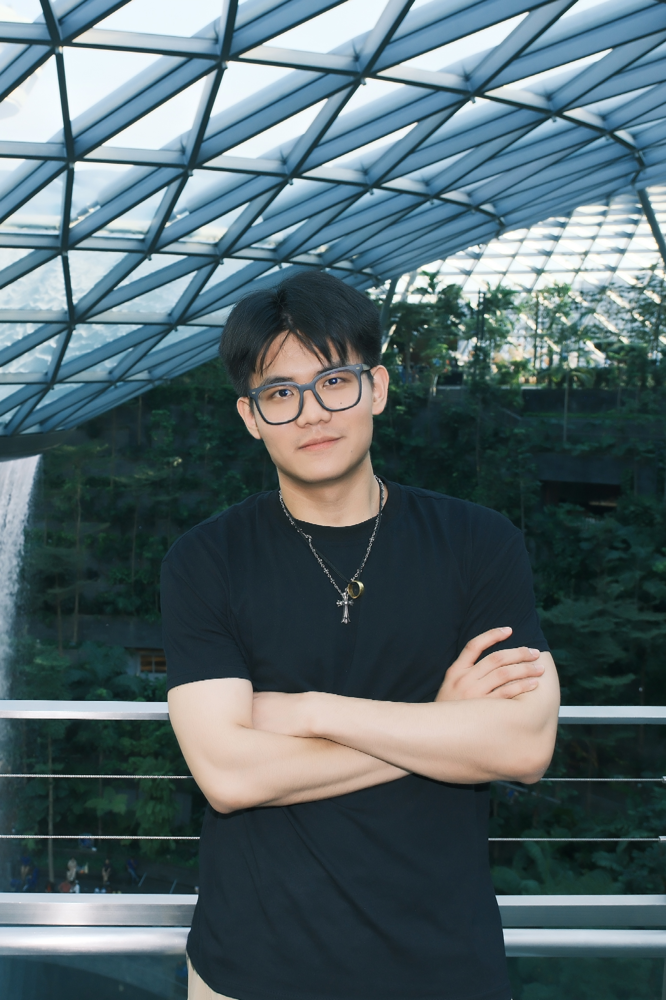

Xinyu Wei (魏 心宇)Hi, I'm a PhD candidate at 📌 I study Multimodal AI, zooming in on the Fine-Grained Problems that make models truly understand 🤩 Feel free to reach out for any academic collaborations!
FunFact
NerdNet · AI Project Bootcamp My co-founder and I run an AI bootcamp for zero-experience students, with 4M+ RMB net profit for three consecutive years. We offer a complete ecosystem: recorded lectures, hands-on case studies, course materials, and a demo platform. We are seeking scaling partnerships—reach out to discuss. |
 I trained a Model that can... |
News
- [2026.02] One paper accepted by CVPR 2026 🎉
- [2025.09] Two papers accepted by NeurIPS 2025 🎉
- [2025.06] I graduated from Peking University 🎉
- [2025.01] Three papers accepted by ICLR 2025 🎉
- [2024.03] One paper accepted by CVPR 2024 🎉, One paper accepted by CVPR Workshop 💪
Education
- [2022-2025] M.S. in Software Engineering as Merit Student 🎉, Peking University, Supervised by Prof. Shanghang Zhang
- [2018-2022] B.E. in Computer Science with Distinction 🎉,
 Wuhan University
Wuhan University
🔍 Fine-Grained Understanding
As (Co)First-Author
-
PAM: Perceive Anything - Recognize, Explain, Caption, and Segment Anything in Images and VideosComprehensive region-level understanding: segment, recognize, explain, and caption in images and videos.✅ NeurIPS 2025
-
MAVIS: Mathematical Visual Instruction Tuning with an Automatic Data EngineThe first specialized LMM for multimodal mathematical problem-solving (CLIP-Math + CoT SFT + DPO).✅ ICLR 2025[Paper]
-
Draw-and-Understand: Leveraging Visual Prompts to Enable MLLMs to Comprehend What You WantEnabling MLLMs to interpret visual prompts (points, boxes, shapes) for fine-grained image comprehension.✅ ICLR 2025
🎨 Fine-Grained Generation
As (Co)First-Author
-
MICo-150K: A Comprehensive Dataset Advancing Multi-Image CompositionA comprehensive dataset for multi-image composition with identity consistency, paired with a strong baseline model Qwen-MICo.✅ CVPR 2026
-
TIIF-Bench: How Does Your T2I Model Follow Your Instructions?Benchmark to systematically assess modern T2I models' ability in following intricate textual instructions.Under Review
-
VideoVerse: How Far is Your T2V Generator from a World Model?Benchmark evaluating modern T2V models on temporal causality and world knowledge for building world models.Under Review
-
PixWizard: Versatile Image-to-Image Visual Assistant with Open-Language InstructionsUnified image-to-image assistant for generation, manipulation, and translation via free-form language instructions.✅ ICLR 2025
Other Publications
-
GENIUS: Generative Fluid Intelligence Evaluation SuiteBenchmark for evaluating generative fluid intelligence: inducing patterns, executing constraints, and adapting to novel scenarios.Under Review[Paper]
-
UniRef-Image-Edit: Towards Scalable and Consistent Multi-Reference Image EditingUnified framework for single-image editing and multi-image composition with scalable and consistent multi-reference inputs.Under Review[Paper]
-
Delving into RL for Image Generation with CoT: A Study on DPO vs. GRPOFirst comprehensive study of DPO vs. GRPO in autoregressive image generation with CoT reasoning.✅ NeurIPS 2025
-
Cloud-Device Collaborative Learning for Multimodal Large Language ModelsEnhancing compressed device-deployed MLLMs via cloud collaboration and adapter-based knowledge distillation.✅ CVPR 2024[Paper]
-
IDAdapter: Learning Mixed Features for Tuning-Free Personalization of Text-to-Image ModelsTuning-free personalization for text-to-image models from a single face image with identity preservation.✅ CVPR 2024 Workshop[Paper]
Hobbies
Photography 📸, Body Building 💪, Movie 🎬, Basketball 🏀, Video Games 🎮
I read history and philosophy 📖
I travel all around the world 🌏
Service
- Reviewer for ICLR, CVPR, ECCV, NeurIPS
- Cluster & API Quota Administrator,
 VCLab
VCLab
Last updated: May 2026